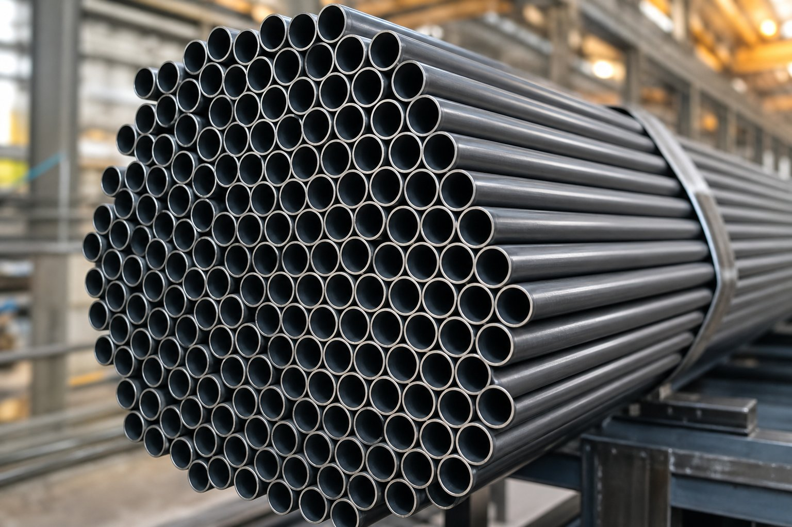

تیوب مبدل حرارتی چیست؟
تیوبهای مبدل حرارتی، لولههای دقیق با دیواره نازک هستند که دستههای بزرگی از آنها در مبدلها و کندانسورها قرار میگیرد و انتقال حرارت بین دو سیال را انجام میدهد. استاندارد تیوب کربنی کشش سرد، مشخصات رایجترین نوع این تیوبها برای سرویسهای عمومی را تعریف میکند.

خواص مکانیکی و ساخت
| خاصیت | مقدار مشخصه |
|---|---|
| روش ساخت | بدون درز با کشش سرد |
| حداقل استحکام کششی | حدود ۳۲۵ مگاپاسکال |
| حداقل حد تسلیم | حدود ۱۸۰ مگاپاسکال |
| کیفیت سطح | صاف و یکنواخت متناسب با سرویس حرارتی |
| تلرانس | دقیقتر از لوله معمولی |
کربن پایین این تیوبها، شکلپذیری لازم برای تستهای تغییر شکل و خمکاری را فراهم میکند.
تستهای مخصوص تیوب
- تستهای تغییر شکل مانند فلر و فلنج برای ارزیابی شکلپذیری.
- تست هیدرواستاتیک یا روش غیرمخرب جایگزین.
- کنترل دقیق قطر خارجی، ضخامت و طول.
- بازرسی سطح از نظر خط و خش و عیوب.
- در صورت درخواست، تستهای تکمیلی در سفارش ذکر شود.
کاربردها
- مبدلهای حرارتی پوسته و تیوب در پالایشگاه و پتروشیمی.
- کندانسورهای نیروگاهی و صنعتی.
- خنککنندههای هوا و آب در سرویسهای عمومی.
- هر کاربرد حرارتی با سیال غیرخورنده شدید.
نکات سفارشدهی
- قطر خارجی و ضخامت را دقیق ذکر کنید.
- طول و شرایط تحویل (شاخه صاف یا خم یو) را مشخص کنید.
- بستهبندی حفاظتی برای جلوگیری از آسیب سطح درخواست کنید.
- گواهی مواد با شماره ذوب بخواهید.
- در صورت نیاز به متریال خاصتر، گریدهای آلیاژی را بررسی کنید.
ابعاد و تلرانسهای رایج
تیوبهای مبدل معمولاً در قطرهای خارجی کوچک با دیوارههای نازک سفارش داده میشوند و تلرانس ابعادی آنها از لوله معمولی سختگیرانهتر است:
| معیار | وضعیت معمول |
|---|---|
| قطر خارجی | تلرانس محدود متناسب با سایز |
| ضخامت دیواره | تلرانس درصدی سختگیرانه |
| طول | قابل تحویل در طولهای دقیق |
| راستی و صافی | محدود برای مونتاژ در دسته تیوب |
- در مبدلهای با خم یو، شعاع خم و ضخامت پس از خمکاری باید کنترل شود.
- انتهای تیوب باید صاف، تمیز و بدون پلیسه تحویل شود.
- بستهبندی باید از آسیب سطح و ورود آلودگی جلوگیری کند.
نورد و نصب تیوب در مبدل حرارتی
کیفیت تیوب مبدل حرارتی، تنها نیمی از نتیجه نهایی است؛ نیم دیگر، کیفیت نصب و نورد تیوبها در شبکه است که عملا تعیین میکند اتصالها در طول عمر نشتی نداشته باشند. در نورد تیوب، میزان انبساط باید کنترلشده باشد؛ انبساط کم، آببندی کافی ایجاد نمیکند و نشتی از دهانه را در پی دارد، در حالی که انبساط زیاد، دیواره تیوب را بیش از حد نازک و شبکه را تحت تنش قرار میدهد و حتی میتواند به ترک دهانه منجر شود. ابزارهای نورد مدرن با کنترل گشتاور یا میزان انبساط، این فرایند را تکرارپذیر میکنند اما همچنان مهارت اپراتور و کنترل نمونهها اهمیت دارد. در ترتیب نورد، معمولا از مرکز شبکه به سمت بیرون حرکت میشود تا تغییر شکل شبکه متقارن باشد و تیوبهای همجوار تحت تاثیر قرار نگیرند. پیش از نورد، تمیزی سطح خارجی تیوب در ناحیه اتصال و تمیزی دهانه شبکه اهمیت دارد؛ وجود براده، زنگ یا آلودگی در این ناحیه، آببندی را مختل میکند. در مبدلهایی که ترکیب نورد و جوشکاری استفاده میشود، ترتیب و کیفیت هر دو مرحله باید کنترل و مستند شود. پس از نصب، تست نشتی سمت تیوب یا سمت پوسته متناسب طراحی مبدل انجام میشود و هر نشتی باید قبل از تحویل رفع گردد. در بهرهبرداری، چند عامل عمر تیوبها را تعیین میکنند: کیفیت آب یا سیال سمت تیوب که رسوبگذاری و خوردگی را کنترل میکند، سرعت جریان که فرسایش را تحت تاثیر قرار میدهد و سیکلهای حرارتی که تنشهای دورهای ایجاد میکنند. در بازرسیهای دورهای، آزمونهای غیرمخرب مانند جریان گردابی برای شناسایی نقاط ضعف و اندازهگیری ضخامت باقیمانده استفاده میشوند و نقاط آسیبدیده قابل درپوشگذاری یا تعویضاند. در نهایت، مستندسازی نصب شامل شماره ردیف تیوبها، مقادیر انبساط و نتایج تست، مرجع اصلی برای تعمیرات آینده است و بدون آن، هر بازرسی بعدی باید از صفر شروع شود.
جمعبندی
تیوب مبدل حرارتی، جزئی دقیق و حساس است که کیفیت آن مستقیماً عملکرد مبدل را تعیین میکند. با سفارش دقیق و کنترل مدارک، از عملکرد پایدار مبدل مطمئن شوید.
سوالات رایج
تفاوت تیوب مبدل با لوله معمولی چیست؟
تیوب مبدل با دیوارههای نازکتر، تلرانسهای دقیقتر و کیفیت سطح بالاتر تولید میشود و تستهای مخصوص خود را دارد. لوله معمولی برای انتقال سیال و تیوب برای انتقال حرارت در دستههای مبدل بهینه شده است.
چرا این تیوبها کشش سرد هستند؟
کشش سرد دقت ابعادی، کیفیت سطح و استحکام را افزایش میدهد و دیوارههای نازک یکنواخت ممکن میسازد؛ ویژگیهایی که برای عملکرد حرارتی و مونتاژ در دسته تیوب حیاتی است.
مهمترین تستهای این تیوب چیست؟
تستهای تغییر شکل (مانند فلر و فلنج)، تست هیدرواستاتیک یا غیرمخرب جایگزین، و کنترل دقیق ابعاد و سطح. این تستها سلامت تیوب را برای سرویس حرارتی تضمین میکنند.
در سفارش چه نکاتی اهمیت دارد؟
قطر خارجی و ضخامت دقیق، طول، شرایط تحویل (صاف یا خم یو)، بستهبندی حفاظتی برای جلوگیری از آسیب سطح و گواهی مواد با شماره ذوب.
مطالب مرتبط
- راهنمای جامع لوله مانیسمان
- راهنمای لوله و تیوب آلیاژی دمای بالا (ASTM A213)
- راهنمای لوله آلیاژی (ASTM A209)
- راهنمای کامل گواهی مواد و تست
- استاندارد ابعاد لوله کربنی (ASME B36.10M)
در استعلام، قطر خارجی، ضخامت، طول و تعداد تقریبی تیوبها را مشخص کنید. امکان تحویل با بستهبندی حفاظتی و گواهی مواد کامل وجود دارد.
مشاهده صفحه محصول ← ثبت RFQ همین محصولتامین این تجهیزات را به پیشرو تجهیز فرتاک بسپارید
شرکت پیشرو تجهیز فرتاک تامینکننده تخصصی تجهیزات صنعتی برای پروژههای نفت، گاز، پتروشیمی، فولاد و نیروگاهی است. برای دریافت پیشنهاد فنی و قیمت، استعلام (RFQ) خود را ثبت کنید تا کارشناسان مهندسی فروش در کوتاهترین زمان پاسخ دهند.
- تامین تیوب مبدلتیوب کربنی و آلیاژی با تلرانس دقیق
- تامین تجهیزات صنایع نفت و گازپکیج مواد مطابق مدارک پروژه